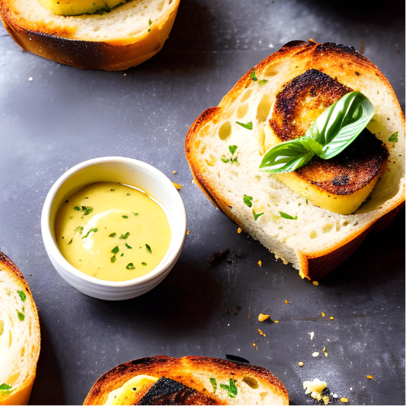
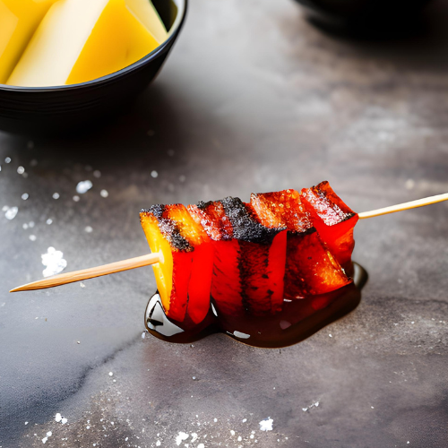
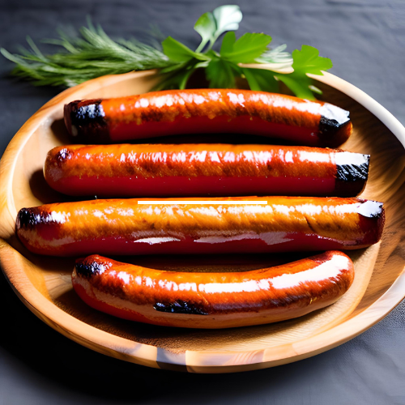
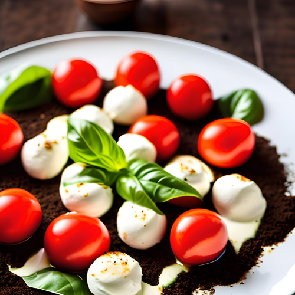

Entradas
Essas entradas são perfeitas para abrir o apetite dos clientes e proporcionar uma experiência gastronômica completa e saborosa. Com uma variedade de sabores, texturas e ingredientes frescos, nossas entradas são ideais para compartilhar com amigos e familiares antes de desfrutar dos suculentos cortes de carne do churrasco. Bom apetite!
Pão de Alho com Manteiga Temperada - R$ 27
Deliciosos pães de alho caseiros, quentinhos e macios, acompanhados de uma manteiga temperada com ervas frescas.

Queijo Coalho Grelhado - R$ 30
Cubos de queijo coalho grelhados na brasa, servidos com uma geleia de pimenta agridoce.

Linguiças Artesanais - R$ 49,90
Uma seleção de linguiças artesanais, com sabores variados, como calabresa, toscana e apimentada. 4 unidades

Salada Caprese - R$ 32
Fatias de tomate, mussarela de búfala e manjericão fresco, temperados com azeite de oliva extra virgem e redução de balsâmico.
